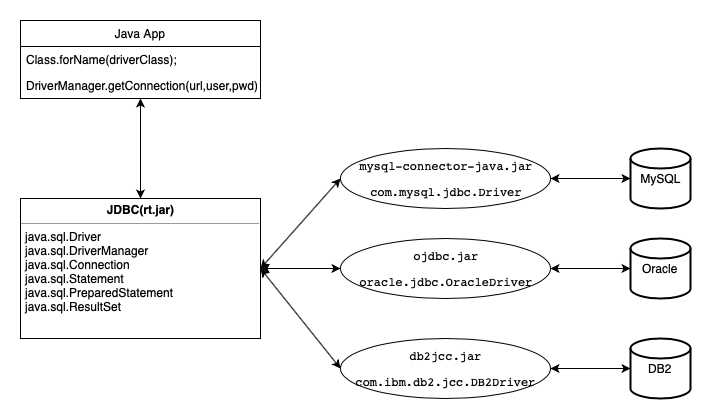

JDBC
JDBC（Java DataBase Connectivity）是Java操作各种数据库而定义的一种规范，该规范是一种应用协议，由JCP（Java Community Process)成员协商而成。（如由JCP成员Oracle提交的关于JDBC的JSR114，JSR169，JSR221JSR(Java Specification Requests)规范提案。）
为了面向接口编程，JDBC定义了：java.sql.Driver（表示数据厂商应该实现的对调用方透明的数据源操作方式），java.sql.Connection(表示和数据库的连接)，java.sql.Statement(表示SQL的执行)，java.sql.ResultSet(表示返回的结果)以及java.sql.PreparedStatement(表示SQL的预编译执行)等关键协议（rt.jar中java.sql包）。
JDBC连接各数据库的示意图 
单纯的使用java jdbc代码操作数据库，需要数据库连接对象，一个操作请求至少要用到一个连接，连操作完毕后则连接被关闭。假设有操作频繁的请求，就要反复创建连接对象以及关闭连接对象，而数据库创建连接通常需要消耗相对较大的资源，创建时间也较长，这会使数据库承受极大的压力，为了解决这种反复创建关闭连接的现象，就需要数据库连接池。
参考资料